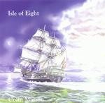

Home Artist links Label link

Colin Masson - Isle Of Eight
| Artist: | Colin Masson |
| Title: | Isle Of Eight |
| Label: | Headline HDL 505 |
| Length(s): | 65 minutes |
| Year(s) of release: | 2001 |
| Month of review: | [06/2001] |
Line up
Colin Masson - guitars, bass, recorders, keyboards, percussion, trombone and drum programming
Catchy Alexander - vocals on 1 and 2, additional keyboards on 3
Ryan Masson - noises on 3
Tracks
Summary
Three long tracks by a member of the Morrigan, recorded in 1998/1999 and now
finally released.
The music
Two very long and a somewhat shorter track on this disc. The first and title track opens
slowly and peacefully: flute, fragile and soothing, acoustic guitar strumming
and then a waltz theme, very much in the electric guitar style of Mike Oldfield.
Although there is not much more to it, the music evolves really well here, with a few
low bass tones here, some soft male voices in the back, but also quite a bit of
relaxed tones on the keyboard. Later on we get a bit more power with sharp, punctual
guitar playing, but once in a while the folky influences of this man shine through.
Not as often, though, as you might expect. The music continues to be in the vein
of Mike Oldfield, and to me certainly not less in this than him. Around the seven
minute mark (I guess I'll have to keep you up to date to where we are in this way),
we come to classical guitar with folky flute.
Around the ten minute mark we have more spacey guitar playing, still owing a bit
to the vibrating sound of Mike Oldfield's guitar. The female vocals that follow
next are almost reggae like, but do not strike me as odd at all here. The music
continues to be melodic enough. Although...maybe it is a bit too melodic even
with its playful synthy strings. Around 16 the music dies away a little to start all
over with acoustic guitar. The music is a bit jig like, with hands clapping. Then
we break into something more classical sounding, but still dance like. The church
organ that follows later evolves into something clear and triumphant. Then the music
does not really take it up yet, rather it tends to go on a little to end up first
in some flutish stuff. Although the music has a triumphant ring, it could have been
brought a bit more powerful I feel, the drums don't really yield the energy they
should. We are almost at the end of this epic now, where the electric guitar again
plays its Oldfieldian lead in a folky/celtic fashion. This is more or less how
the song ends.
The second track is even longer. Total Eclipse opens like its predecessor with
acoustic guitar. Quite nice melodies here. The song gets underway very slowly.
It does not differ much in the methods and sounds used from the previous track,
but the screaming, triumphant eruption followed by the eerie guitar comes as
a big surprise. I am thinking a bit of Landmarq here for some reason. Back to moodiness
now with fast repetitive dark acoustic guitar and low sounds throughout. The keyboards
tinkle softly, a bit menacingly in the back. After its rather calm start, the waters
that are stirred in this track are darker and deeper. The folkiness is still in here
but in a much tenser form and I like it the better for it. The percussion also has
a stronger drive. Still Oldfieldian in style, the music is more varied, is
more emotionally laden, and on the whole takes the listener along for the whole
length of it. You only have to listen to the build-up round the 17 minute mark
and you know what I mean: here's some eerie soundtrack music with strong dark notes
on the guitar. Again I am reminded of the recent epics on Landmarqs disc. The guitar
gets to be quite heavy and freaky now. Quite dissonant.
Slightly after the twenty minute mark the music seems to get back into a more folky,
a lighter vein, but this is not the case: the guitar continues to drive you on
remorselessly. The vocal part that finally comes, almost at the end, is quite
similar to Jon Anderson's. It is only short and followed by some driving rhythm guitar,
solo electric guitar and dark organ, with a few classical influences in the synth
melodies. Truly a grand epic.
The third and final track opens with keyboards. The undercurrent of this opening
is a bit in the style of Tangerine Dream, quite a bit of sequencing and a slow
but sure build-up to something. The folkiness and merriness does return to this
track, but with burpy bass beneath it. The song ends triumphantly again. Again
a great track with strong build-up.
Conclusion
What is most striking perhaps about these songs is that notwithstanding their length
they stand up. Even the opener, which is weaker/less likable than the second even
longer track, does not tire. I simply like the darker tones of the second epic
track much better and I also feel stronger emotion, a better drive. For Oldfield
fans an album that should not be missed. Even or maybe especially if you find that
Oldfield has not recently done anything worthwhile, sample and savour. I think you
will not be disappointed.
© Jurriaan Hage